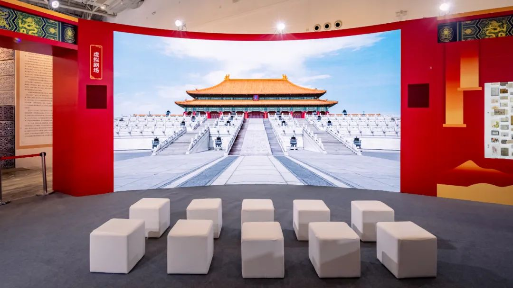

2024年8月23日，第十届“中国博物馆及相关产品与技术博览会”（下文简称“博博会”）在内蒙古自治区呼和浩特市敕勒川国际会展中心举办。 故宫博物院携“双展区”亮相“博博会”现场。本届“博博会”，故宫博物院紧扣展览主题，带来了集观赏性、趣味性、教育性与前沿性于一身的丰富展项。借助“博博会”的广阔的平台，让更多的观众了解故宫、走进故宫，也期待与其他文化遗产机构携手共建、共享发展成果。
本届“博博会”展览主题为“博物馆高质量发展：教研并重 数实融会”。故宫展区紧扣展览主题，位于 1 号馆 1M001 的“故宫博物院主展区”，占地 228 平米，展示了包括数字应用、社教活动、出版物、文创产品等种类丰富的展项、展品。此外，还有位于6号门5号馆的“故宫博物院数智化展区”，占地 38 平米，展示了文物知识图谱、数字文物库等推动文物数据资源共享服务的展项。
